ITER Equilibrium in Cylindrical Coordinates
Load Dependencies
using CairoMakie
using GeometricIntegrators
using LaTeXStrings
using LinearAlgebra
using ChargedParticleDynamics
using ChargedParticleDynamics: InitialConditions, charged_particle, guiding_center, pauli_particle
using ChargedParticleDynamics: md
import ChargedParticleDynamics.ChargedParticle3d
import ChargedParticleDynamics.GuidingCenter3d
import ChargedParticleDynamics.GuidingCenter4d
import ChargedParticleDynamics.PauliParticle3d
import .ChargedParticle3d.TokamakIterCylindrical: from_cartesian, g₁₁, g₂₂, g₃₃
import .ChargedParticle3d.TokamakIterCylindrical: R₀, B, b, aₚ, bₚ, cₚ, b⃗, ḡ, DF̄, JMagnetic Field
fig, ax = plot_fieldlines(ChargedParticle3d.TokamakIterCylindrical; xrange = (3., 11.), yrange = (-4., +4.), levels = 25)
fig
Initial conditions and solver options
Set and initialize initial conditions:
X₀ = from_cartesian(0, [7.0, 0, 0])
E₀ = 1E6
θ₀ = 0.
α₀ = π*5/16
m₀ = md
ics = InitialConditions(X₀, θ₀, α₀, E₀, m₀, 1, aₚ, bₚ, cₚ, b⃗, B, ḡ, DF̄, J)Charged Particle Initial Conditions with
x = [7.0, 0.039356746343052945, -0.0005129847414674947]
X = [7.0, 0.0, 0.0]
ρ = [3.220094336611642e-19, 0.039356746343052945, -0.0005129847414674947]
v = [-0.1862898084737484, -0.007620581643085356, -0.01193182240348234]
v∥ = [0.0, -0.007620581643085356, -0.01193182240348234]
v⟂ = [-0.1862898084737484, 0.0, 0.0]
|v| = 0.20429884217319663
u = 0.0838696856565162
μ = 0.003681107352162368
θ = 0.0
α = 0.9817477042468103
ω = 2.258748612191711e8
M = 3.3435837724e-27
E = 1.0e6
C = 1Obtain charged particle initial conditions:
x₀, v₀ = charged_particle(ics)
p₀ = ChargedParticle3d.TokamakIterCylindrical.charged_particle_3d_pᵢ(0, x₀, v₀)3-element Vector{Float64}:
-0.09391390241426842
-2.0015794622231975
0.617496283226874Obtain Pauli particle initial conditions:
X₀, u₀, μ = pauli_particle(ics)([7.0, 0.0, 0.0], [0.0, -0.007620581643085356, -0.01193182240348234], 0.003681107352162368)Obtain guiding center initial conditions:
q₀, μ = guiding_center(ics)([7.0, 0.0, 0.0, 0.0838696856565162], 0.003681107352162368)Modify guiding center initial conditions for 3D models to avoid singularities:
q3₀ = copy(q₀)
q3₀[2] = sqrt(eps())
q3₀4-element Vector{Float64}:
7.0
1.4901161193847656e-8
0.0
0.0838696856565162Parameters:
parameters = (μ=μ,)(μ = 0.003681107352162368,)Time step size and integration intervals:
Δt1 = 0.01
Δt2 = 0.1
Δt3 = 1.0
Δt4 = 10.0
Δt5 = 50.0
timespan = (0., 10_000.)
timespan_long = (0., 1_000_000.);(0.0, 1.0e6)Nonlinear solver options. f_abstol is an absolute bound on the residual and has to stay above its round-off floor, which for these ITER-scale models is ‖ϑ‖ eps — the 1E-15 this page used to ask for sits below it, so the solver had no reachable stopping criterion and the line search ran to its iteration limit on every step:
options = (f_abstol = 1E-12, max_iterations = 50, warn_iterations = 50)(f_abstol = 1.0e-12, max_iterations = 50, warn_iterations = 50)Charged Particle
Integrate charged particle dynamics and convert result to cartesian coordinates:
code = ChargedParticle3d.TokamakIterCylindrical.podeproblem(x₀, p₀; timestep=Δt1, timespan=timespan)
csol = integrate(code, PartitionedGauss(1); options...)
ccar = cartesian_solution(csol, ChargedParticle3d.TokamakIterCylindrical);(t = GeometricSolutions.ScalarDataSeries{Float64} with data type Float64
[0.0, 0.01, 0.02, 0.03, 0.04, 0.05, 0.06, 0.07, 0.08, 0.09 … 9999.91, 9999.92, 9999.93, 9999.94, 9999.95, 9999.96, 9999.97, 9999.98, 9999.99, 10000.0], R = GeometricSolutions.ScalarDataSeries{Float64} with data type Float64
[7.0, 6.998138189492074, 6.996280628902172, 6.994431461831429, 6.9925948162101275, 6.990774795033726, 6.988975467127721, 6.987200857962696, 6.985454940541026, 6.983741626376788 … 5.812720794293697, 5.810679834710123, 5.808644217227942, 5.806620473123198, 5.804615102578128, 5.8026345536544355, 5.800685201345615, 5.798773326778643, 5.7969050966359195, 5.795086542868771], X = GeometricSolutions.ScalarDataSeries{Float64} with data type Float64
[6.999999078963313, 6.998136792925771, 6.9962786640080274, 6.994428838529505, 6.992591447084654, 6.9907705952690815, 6.988970354434894, 6.987194752496625, 6.985447764809259, 6.983733305139902 … -0.6381944419854283, -0.6379086146434527, -0.6376287094154681, -0.6373557453301341, -0.6370907200855839, -0.6368346068067497, -0.6365883508698813, -0.6363528668050998, -0.6361290352877056, -0.6359177002288193], Y = GeometricSolutions.ScalarDataSeries{Float64} with data type Float64
[-0.003590893032779872, -0.004421167945779349, -0.005243462388523666, -0.006057805225113521, -0.006864244116970526, -0.007662845424518124, -0.008453694064461165, -0.009236893322872333, -0.010012564624402129, -0.01078084725803807 … -5.777580019924714, -5.775558218983732, -5.773541137920884, -5.771535235341472, -5.769546940918232, -5.767582634591177, -5.765648625839662, -5.763751133096257, -5.761896263372626, -5.76008999216804], Z = GeometricSolutions.ScalarDataSeries{Float64} with data type Float64
[0.039356746343052945, 0.039236749351811186, 0.03902925642914418, 0.038734543819158064, 0.038353082671474296, 0.03788553827446048, 0.03733276884867587, 0.036695823900733934, 0.0359759421388423, 0.035174548952358484 … -0.3993420279305123, -0.3993814066493346, -0.39953620583470995, -0.3998059648185323, -0.400189852906002, -0.4006866712557853, -0.40129485596525116, -0.40201248236078474, -0.4028372704889174, -0.4037665917996461])Plot solution and energy error:
fig, ax = plot_trajectory_poloidal(ccar.R, ccar.Z, ChargedParticle3d.TokamakIterCylindrical; linewidth = 1)
fig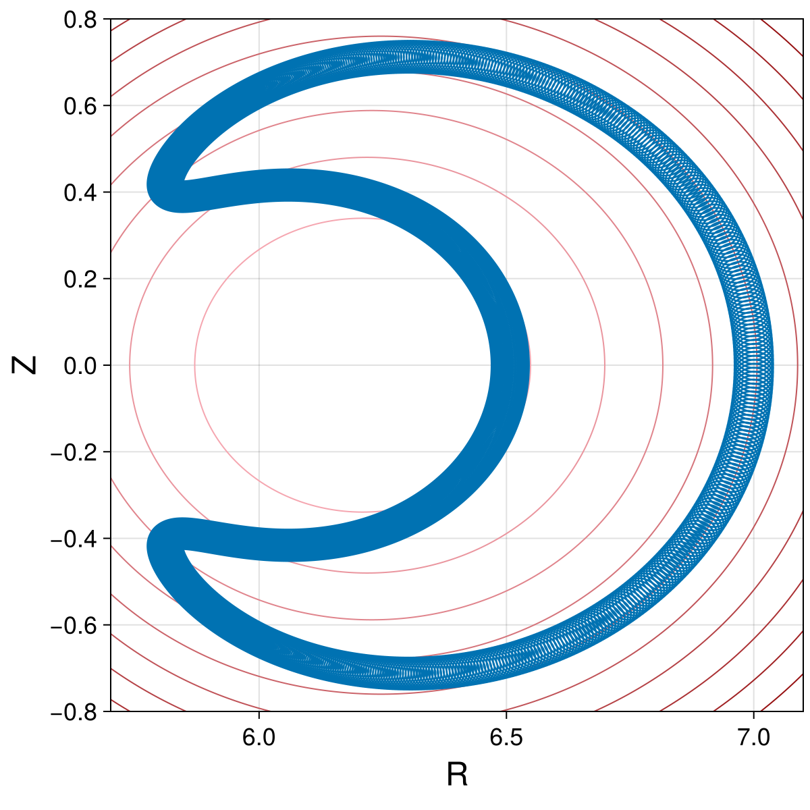
fig, ax = plot_trajectory_3d(ccar.X, ccar.Y, ccar.Z)
fig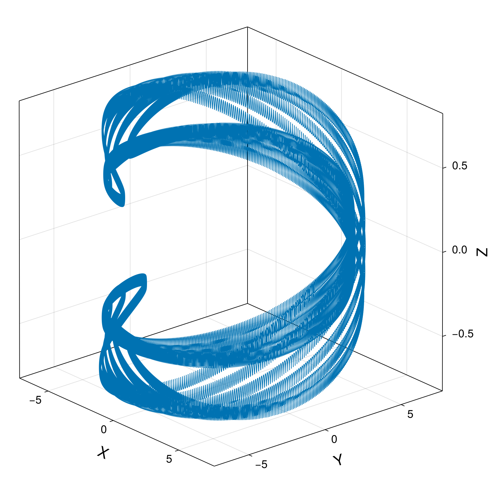
cham = compute_invariant(csol.t, csol.q, csol.p, code.parameters, ChargedParticle3d.TokamakIterCylindrical.hamiltonian)
plot_invariant_error(csol.t, cham; label="H", padding_right=30)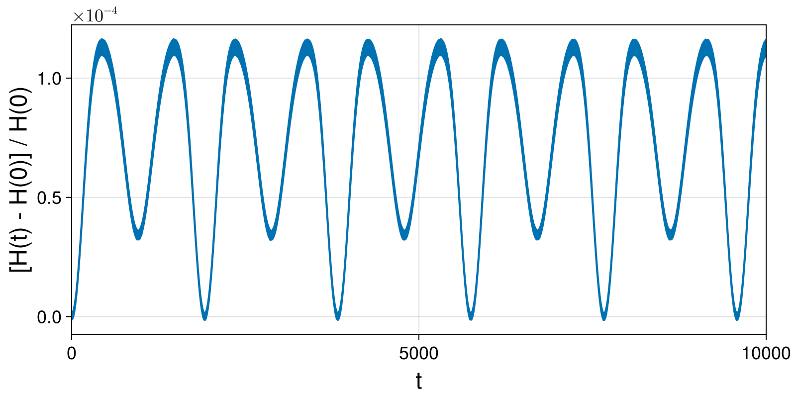
Integrate charged particle dynamics with large time step and convert result to cartesian coordinates:
code_Δt2 = ChargedParticle3d.TokamakIterCylindrical.podeproblem(x₀, p₀; timestep=Δt2, timespan=timespan)
csol_Δt2 = integrate(code_Δt2, PartitionedGauss(1); options...)
ccar_Δt2 = cartesian_solution(csol_Δt2, ChargedParticle3d.TokamakIterCylindrical);(t = GeometricSolutions.ScalarDataSeries{Float64} with data type Float64
[0.0, 0.1, 0.2, 0.3, 0.4, 0.5, 0.6, 0.7, 0.8, 0.9 … 9999.1, 9999.2, 9999.3, 9999.4, 9999.5, 9999.6, 9999.7, 9999.8, 9999.9, 10000.0], R = GeometricSolutions.ScalarDataSeries{Float64} with data type Float64
[7.0, 6.9823604727904875, 6.968469589032989, 6.961286014165952, 6.962345252510484, 6.971420119276566, 6.986571167523979, 7.004574410443037, 7.021621206181316, 7.034127198795177 … 5.9952384338696785, 5.990332372233209, 5.995645440942824, 6.0096304684972095, 6.028321969825747, 6.046475043387002, 6.059033388310527, 6.062504191136606, 6.055885614614446, 6.040930679161806], X = GeometricSolutions.ScalarDataSeries{Float64} with data type Float64
[6.999999078963313, 6.9823509143129865, 6.968444109563938, 6.961238573384396, 6.962269601682375, 6.971308380019011, 6.9864127794765185, 7.004355713577435, 7.021325862518705, 7.0337375298295575 … 4.907544711633893, 4.905683460669336, 4.91245834677361, 4.926623267659005, 4.944868311046373, 4.962768930543634, 4.976024064463789, 4.98162698302663, 4.97866623365602, 4.968568440123577], Y = GeometricSolutions.ScalarDataSeries{Float64} with data type Float64
[-0.003590893032779872, -0.01155341419671723, -0.01884423416456251, -0.02570010598568521, -0.0324562574061348, -0.03947087699551416, -0.04704416695580613, -0.05535078236631489, -0.06440105139764138, -0.0740392483569968 … -3.4436737334222545, -3.4377829648685605, -3.437370687707796, -3.4415173319992003, -3.448034680552555, -3.4540968417710363, -3.4570319799705387, -3.45504698514071, -3.4476996840136134, -3.436010932207039], Z = GeometricSolutions.ScalarDataSeries{Float64} with data type Float64
[0.039356746343052945, 0.034442628362586485, 0.02209720960978291, 0.00477667731656856, -0.013990326519652405, -0.03036188537670413, -0.04101450468789366, -0.043855107772561526, -0.03845482457513432, -0.026119772488098828 … 0.4174894941571952, 0.3986614051490341, 0.3800442028153658, 0.3668188542474712, 0.3626373574501293, 0.3686156353534438, 0.38306166903874633, 0.4019752727543321, 0.42014915592264246, 0.4325733714635355])Pauli Particle with Symplectic Integrator
Integrate charged particle dynamics and convert result to cartesian coordinates:
hode = PauliParticle3d.TokamakIterCylindrical.hodeproblem(X₀, u₀; parameters = parameters, timestep=Δt3, timespan=timespan)
hsol = integrate(hode, PartitionedGauss(1); options...)
hcar = cartesian_solution(hsol, PauliParticle3d.TokamakIterCylindrical);(t = GeometricSolutions.ScalarDataSeries{Float64} with data type Float64
[0.0, 1.0, 2.0, 3.0, 4.0, 5.0, 6.0, 7.0, 8.0, 9.0 … 9991.0, 9992.0, 9993.0, 9994.0, 9995.0, 9996.0, 9997.0, 9998.0, 9999.0, 10000.0], R = GeometricSolutions.ScalarDataSeries{Float64} with data type Float64
[7.0, 7.000222851570331, 7.0000235450910795, 6.999742168722665, 6.999773286258885, 6.999227742467042, 6.998948725898372, 6.998651900650371, 6.997890128008936, 6.997570414539034 … 5.8182213471553315, 5.81804584161393, 5.817391908118783, 5.817111044203844, 5.816764911582807, 5.816183995382467, 5.81607019569063, 5.815500370362677, 5.815209215890359, 5.814976080462085], X = GeometricSolutions.ScalarDataSeries{Float64} with data type Float64
[7.0, 6.999723975030511, 6.998027447914065, 6.995252512381804, 6.9917920050005335, 6.98675921981951, 6.980999745058537, 6.974225617785073, 6.965998629599207, 6.9572219688457 … -0.29819159725270417, -0.3059407007336643, -0.31345297047761916, -0.32083352744859844, -0.328001097491831, -0.33497741555611876, -0.3418127302538549, -0.3484077619248093, -0.35486834610301543, -0.3611312169105719], Y = GeometricSolutions.ScalarDataSeries{Float64} with data type Float64
[0.0, -0.08357179566406096, -0.16715702220019532, -0.2506645499673259, -0.33417153953341233, -0.4175938160310194, -0.500924971674484, -0.5842135386204855, -0.6673300053997882, -0.7503693641419217 … -5.8105749643061895, -5.8099963599606275, -5.8089410263786165, -5.808256773616609, -5.8075097345303766, -5.806529634748323, -5.80601727336711, -5.805054400186012, -5.804371342489234, -5.80375146439946], Z = GeometricSolutions.ScalarDataSeries{Float64} with data type Float64
[0.0, -0.007018623191738849, -0.01367042259814033, -0.020830029630671598, -0.02764427969959926, -0.03442324254298201, -0.041585801706904846, -0.04823617487079801, -0.055199594844640654, -0.06222044742338939 … -0.4547196959282914, -0.45365656700608603, -0.45257400310011964, -0.451827455239589, -0.45060477030712776, -0.44981447106464045, -0.44885474751984866, -0.44775379191940423, -0.44706952452209003, -0.44590540614942065])Plot solution and energy error:
fig, ax = plot_trajectory_poloidal(ccar.R, ccar.Z, ChargedParticle3d.TokamakIterCylindrical; label="Charged Particle Δt=0.01", linewidth = 1)
plot_trajectory_scatter!(fig, ax, hcar.R, hcar.Z; label="Pauli Particle Δt=1.0")
axislegend(ax)
fig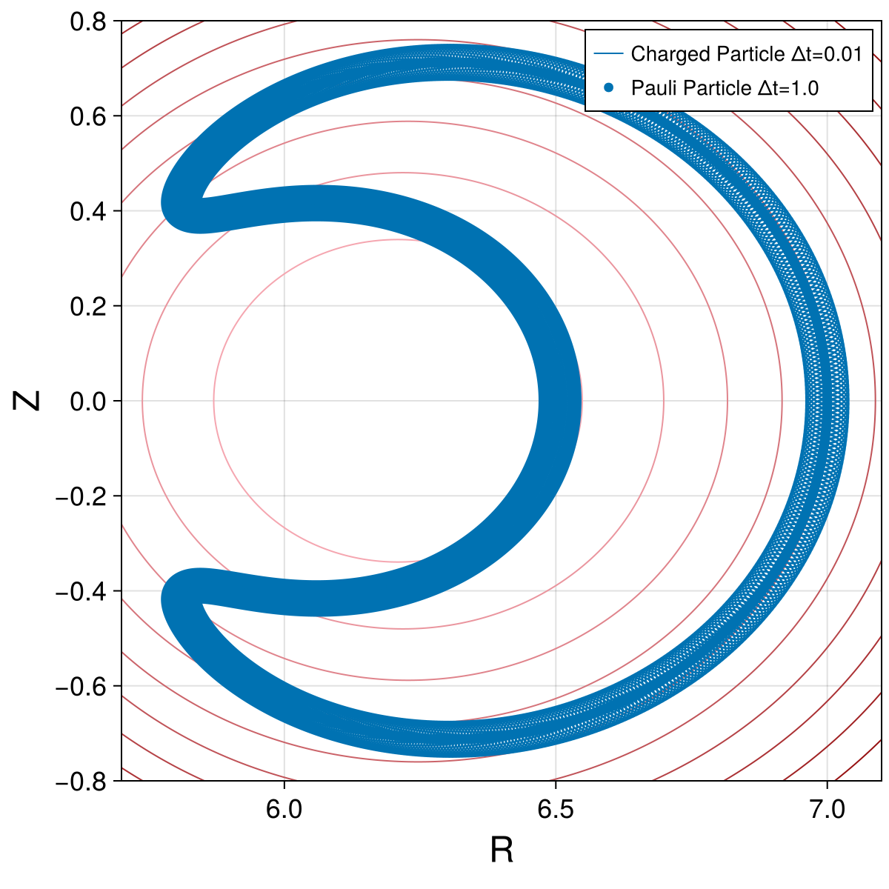
fig, ax = plot_trajectory_3d(ccar.X, ccar.Y, ccar.Z)
plot_trajectory_3d!(fig, ax, hcar.X, hcar.Y, hcar.Z; linewidth = 3, color=:orange)
fig
hham = compute_invariant(hsol.t, hsol.q, hsol.p, hode.parameters, PauliParticle3d.TokamakIterCylindrical.hamiltonian)
plot_invariant_error(hsol.t, hham; label="H", padding_right=30)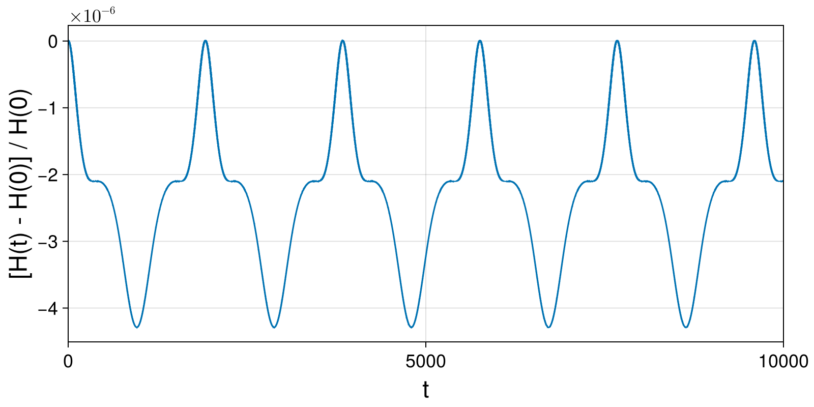
Integrate charged particle dynamics with large time step and convert result to cartesian coordinates:
hode_Δt5 = PauliParticle3d.TokamakIterCylindrical.hodeproblem(X₀, u₀; parameters = parameters, timestep=Δt5, timespan=timespan_long)
hsol_Δt5 = integrate(hode_Δt5, PartitionedGauss(1); initialguess=NoInitialGuess(), options...);
hcar_Δt5 = cartesian_solution(hsol_Δt5, PauliParticle3d.TokamakIterCylindrical);(t = GeometricSolutions.ScalarDataSeries{Float64} with data type Float64
[0.0, 50.0, 100.0, 150.0, 200.0, 250.0, 300.0, 350.0, 400.0, 450.0 … 999550.0, 999600.0, 999650.0, 999700.0, 999750.0, 999800.0, 999850.0, 999900.0, 999950.0, 1.0e6], R = GeometricSolutions.ScalarDataSeries{Float64} with data type Float64
[7.0, 6.934933643099521, 6.760060923004046, 6.532721453673101, 6.307946008413961, 6.125174794249583, 5.994439637662136, 5.914156325161863, 5.872219782836547, 5.861637061514209 … 5.869879541932024, 5.8999802491420805, 5.951082501160201, 6.023734273821737, 6.117261656232078, 6.226897241583464, 6.3411653540035875, 6.441470309974252, 6.506542711756396, 6.519974362603468], X = GeometricSolutions.ScalarDataSeries{Float64} with data type Float64
[7.0, 5.921999753351545, 3.1950471191619663, -0.028899711944527322, -2.7250713580684525, -4.466548875376324, -5.354291569651591, -5.705355751904936, -5.803648655498889, -5.81816487627461 … 2.4448401500081935, 3.0150809635654445, 3.904966592528931, 4.9520862559762575, 5.861936877694322, 6.203674551961627, 5.520734130133691, 3.577094353498643, 0.6180034402955634, -2.5968178307683525], Y = GeometricSolutions.ScalarDataSeries{Float64} with data type Float64
[0.0, -3.6087703661355115, -5.957356594082742, -6.5326575295151, -5.688951479710526, -4.1913849028674175, -2.695341973986394, -1.5576138104990387, -0.8947778838699856, -0.7125633399224145 … -5.336500958277813, -5.071395638619799, -4.490725870819565, -3.429608769959884, -1.7488814175736922, 0.5372814072564415, 3.119594959476702, 5.356952094283457, 6.477126662934199, 5.980518609854001], Z = GeometricSolutions.ScalarDataSeries{Float64} with data type Float64
[0.0, -0.30037711482583385, -0.5352980377229533, -0.6695458216085082, -0.707453694344351, -0.6789323523568924, -0.6186395236342818, -0.553098036114133, -0.4975062996535412, -0.45848206659687973 … -0.4395778660405064, -0.43046914372455836, -0.43078279728826885, -0.4349833050998436, -0.42992177340417215, -0.40480990894543156, -0.34500469866144523, -0.24649489364261368, -0.1117539257357314, 0.03961886824192962])Pauli Particle with Variational Integrator
Integrate charged particle dynamics and convert result to cartesian coordinates:
pode = PauliParticle3d.TokamakIterCylindrical.iodeproblem(X₀, u₀; parameters = parameters, timestep=Δt3, timespan=timespan)
psol = integrate(pode, VPRKGauss(1); options...)
pcar = cartesian_solution(psol, PauliParticle3d.TokamakIterCylindrical);(t = GeometricSolutions.ScalarDataSeries{Float64} with data type Float64
[0.0, 1.0, 2.0, 3.0, 4.0, 5.0, 6.0, 7.0, 8.0, 9.0 … 9991.0, 9992.0, 9993.0, 9994.0, 9995.0, 9996.0, 9997.0, 9998.0, 9999.0, 10000.0], R = GeometricSolutions.ScalarDataSeries{Float64} with data type Float64
[7.0, 7.0002228515703395, 7.000023545091093, 6.999742168722636, 6.999773286258913, 6.999227742467033, 6.998948725898358, 6.998651900650399, 6.997890128008912, 6.9975704145390365 … 5.818221347154897, 5.818045841613932, 5.817391908118377, 5.817111044203668, 5.816764911582712, 5.816183995382047, 5.816070195690669, 5.815500370362357, 5.815209215890171, 5.814976080462081], X = GeometricSolutions.ScalarDataSeries{Float64} with data type Float64
[7.0, 6.99972397503052, 6.998027447914078, 6.995252512381775, 6.99179200500056, 6.9867592198195, 6.980999745058522, 6.974225617785099, 6.965998629599182, 6.9572219688457 … -0.29819159727187117, -0.3059407007527034, -0.3134529704964394, -0.3208335274672945, -0.32800109751034967, -0.33497741557444916, -0.3418127302720684, -0.3484077619428049, -0.35486834612088, -0.36113121692827443], Y = GeometricSolutions.ScalarDataSeries{Float64} with data type Float64
[0.0, -0.08357179566407545, -0.16715702220021497, -0.25066454996734155, -0.33417153953343054, -0.4175938160310398, -0.5009249716744999, -0.5842135386205083, -0.6673300053998072, -0.7503693641419394 … -5.810574964304772, -5.8099963599596265, -5.808941026377194, -5.808256773615401, -5.807509734529236, -5.806529634746846, -5.806017273366076, -5.805054400184611, -5.804371342487953, -5.803751464398355], Z = GeometricSolutions.ScalarDataSeries{Float64} with data type Float64
[0.0, -0.00701862319176739, -0.013670422598115184, -0.02083002963068372, -0.02764427969961563, -0.03442324254295526, -0.04158580170693113, -0.048236174870794325, -0.05519959484462455, -0.062220447423419804 … -0.45471969592766254, -0.4536565670053297, -0.45257400309920526, -0.4518274552390733, -0.45060477030617196, -0.44981447106399736, -0.4488547475191838, -0.44775379191848536, -0.4470695245216122, -0.44590540614853336])Plot solution and energy error:
fig, ax = plot_trajectory_poloidal(ccar.R, ccar.Z, ChargedParticle3d.TokamakIterCylindrical; label="Charged Particle Δt=0.01", linewidth = 1)
plot_trajectory_scatter!(fig, ax, pcar.R, pcar.Z; label="Pauli Particle Δt=1.0")
axislegend(ax)
fig
fig, ax = plot_trajectory_3d(ccar.X, ccar.Y, ccar.Z)
plot_trajectory_3d!(fig, ax, pcar.X, pcar.Y, pcar.Z; linewidth = 3, color=:orange)
fig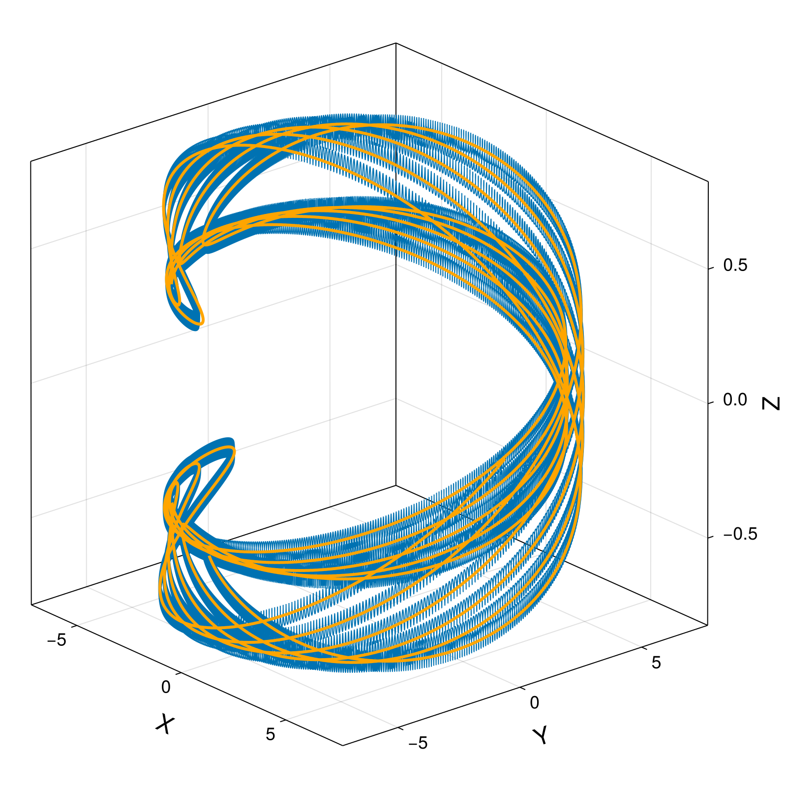
pham = compute_invariant(psol.t, psol.q, psol.p, pode.parameters, PauliParticle3d.TokamakIterCylindrical.hamiltonian)
plot_invariant_error(psol.t, pham; label="H", padding_right=30)
Integrate charged particle dynamics with large time step and convert result to cartesian coordinates:
pode_Δt5 = PauliParticle3d.TokamakIterCylindrical.iodeproblem(X₀, u₀; parameters = parameters, timestep=Δt5, timespan=timespan_long)
psol_Δt5 = integrate(pode_Δt5, VPRKGauss(1); initialguess=NoInitialGuess(), options...);
pcar_Δt5 = cartesian_solution(psol_Δt5, PauliParticle3d.TokamakIterCylindrical);(t = GeometricSolutions.ScalarDataSeries{Float64} with data type Float64
[0.0, 50.0, 100.0, 150.0, 200.0, 250.0, 300.0, 350.0, 400.0, 450.0 … 999550.0, 999600.0, 999650.0, 999700.0, 999750.0, 999800.0, 999850.0, 999900.0, 999950.0, 1.0e6], R = GeometricSolutions.ScalarDataSeries{Float64} with data type Float64
[7.0, 6.934933643099525, 6.760060923004051, 6.5327214536730835, 6.307946008413991, 6.12517479424957, 5.9944396376672735, 5.914156325162539, 5.872219782836574, 5.861637061515407 … 5.869879707543083, 5.899980596260987, 5.951083026434657, 6.02373498569749, 6.1172625309707644, 6.226898217776982, 6.341166296392007, 6.44147104442325, 6.506543060579549, 6.51997423825018], X = GeometricSolutions.ScalarDataSeries{Float64} with data type Float64
[7.0, 5.921999753351552, 3.1950471191619783, -0.028899711944534497, -2.725071358068445, -4.466548875376305, -5.354291569657659, -5.705355751905368, -5.8036486554977555, -5.818164876274178 … 2.4448368981133832, 3.0150811683134715, 3.904969685053345, 4.952090937001957, 5.86194075591017, 6.203674331915578, 5.520726803097531, 3.5770792645743157, 0.617983712326051, -2.5968362094790813], Y = GeometricSolutions.ScalarDataSeries{Float64} with data type Float64
[0.0, -3.6087703661355075, -5.957356594082742, -6.532657529515082, -5.688951479710562, -4.191384902867419, -2.695341973985765, -1.5576138105000223, -0.8947778838775078, -0.7125633399357918 … -5.336502630248523, -5.071395920724156, -4.4907238777654825, -3.429603261250347, -1.748871478130439, 0.5372952615517437, 3.1196098416402065, 5.356963052989597, 6.477128895620003, 5.98051049397828], Z = GeometricSolutions.ScalarDataSeries{Float64} with data type Float64
[0.0, -0.30037711482582324, -0.5352980377229907, -0.6695458216084008, -0.707453694344467, -0.6789323523568551, -0.6186395236199091, -0.5530980361232625, -0.4975062996442329, -0.4584820666064206 … -0.4395777220717242, -0.43046911778606994, -0.4307828284663775, -0.43498332120958544, -0.4299216625750583, -0.4048095646622868, -0.3450040252773018, -0.24649388696500904, -0.11175267427321417, 0.0396201673953995])Guiding Center 4D with Variational Lobatto-IIIA-IIIB
Integrate charged particle dynamics and convert result to cartesian coordinates:
vode = GuidingCenter4d.TokamakIterCylindrical.iodeproblem(q₀; parameters = parameters, timestep=10., timespan=(0,1800))
vsol = integrate(vode, VPRKLobattoIIIAIIIB(2); options...)
vcar = cartesian_solution(vsol, GuidingCenter4d.TokamakIterCylindrical);(t = GeometricSolutions.ScalarDataSeries{Float64} with data type Float64
[0.0, 10.0, 20.0, 30.0, 40.0, 50.0, 60.0, 70.0, 80.0, 90.0 … 1710.0, 1720.0, 1730.0, 1740.0, 1750.0, 1760.0, 1770.0, 1780.0, 1790.0, 1800.0], R = GeometricSolutions.ScalarDataSeries{Float64} with data type Float64
[7.0, 6.999975446732497, 6.986595422595228, 6.973242612558845, 6.947450132671452, 6.921615858505033, 6.885565379266085, 6.848633166295587, 6.805344256048983, 6.759190410777679 … 6.6109507211236505, 6.429402248426298, 6.662279029769941, 6.570709411823163, 6.701513921000215, 6.716819876613673, 6.742313805614872, 6.854720355262181, 6.7890334661493625, 6.963553294152206], X = GeometricSolutions.ScalarDataSeries{Float64} with data type Float64
[7.0, 6.950128713332344, 6.7822583195598805, 6.5312856449823355, 6.153238471862421, 5.730539029542447, 5.179658757050846, 4.6189072985709165, 3.955923018609087, 3.2938042861165786 … -1.9909519945283407, -1.6825436607985835, -1.305197242503082, 0.10446765780836001, -0.6899887624679885, 2.0412887785811225, 0.0962332996380545, 3.8542528019649294, 1.271652020720819, 5.247147460035097], Y = GeometricSolutions.ScalarDataSeries{Float64} with data type Float64
[0.0, -0.8338867566829, -1.6773454282852343, -2.44303507081953, -3.2256347676618313, -3.8819696706181364, -4.536754980451797, -5.056626505259433, -5.537452800176057, -5.9023307543638195 … 6.304028838180305, 6.205341255851739, 6.53317855478286, 6.569878894096415, 6.665898614667611, 6.399125672879953, 6.74162699987367, 5.668503019968427, 6.668873708707692, 4.578047401801915], Z = GeometricSolutions.ScalarDataSeries{Float64} with data type Float64
[0.0, -0.06911304859629082, -0.14034085676741964, -0.2043247499177196, -0.2737272540584374, -0.3307093984610709, -0.39412137888818916, -0.44313224592306816, -0.4970572230391089, -0.5376240675580097 … 0.6747512404422593, 0.6286883610995919, 0.6682365203879044, 0.5466465086565742, 0.6536832072412015, 0.4495676549677943, 0.6192762815839947, 0.34275805586541164, 0.5441071835876671, 0.23777946770611003])Plot solution and energy error:
fig, ax = plot_trajectory_poloidal(ccar.R, ccar.Z, ChargedParticle3d.TokamakIterCylindrical; label="Charged Particle Δt=0.01", linewidth = 1)
plot_trajectory_scatter!(fig, ax, vcar.R, vcar.Z; label="Guiding Center Δt=1.0", color=:orange, markersize=10)
axislegend(ax)
fig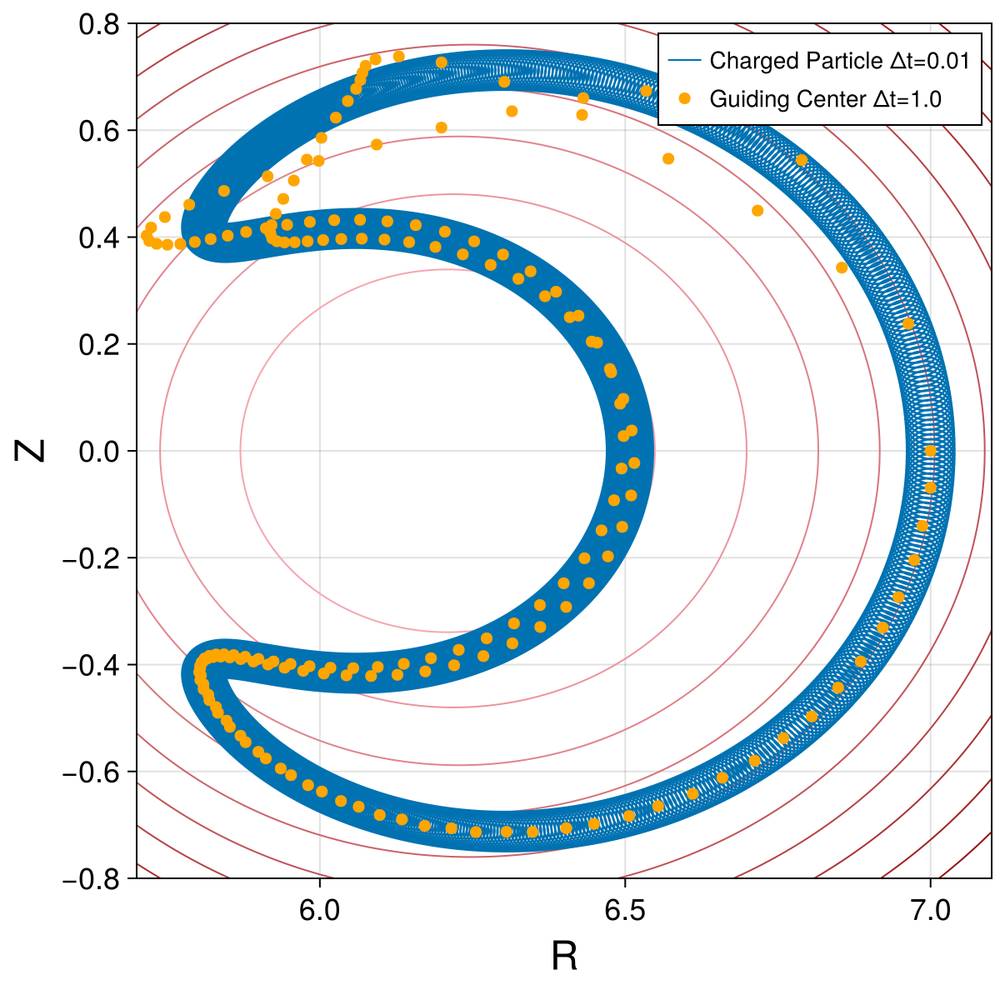
fig, ax = plot_trajectory_3d(vcar.X, vcar.Y, vcar.Z)
fig
vham = compute_invariant(vsol.t, vsol.q, vsol.p, vode.parameters, GuidingCenter4d.TokamakIterCylindrical.hamiltonian)
plot_invariant_error(vsol.t, vham; label="H", padding_right=30)
Guiding Center 4D with Projected Variational Midpoint
Integrate charged particle dynamics and convert result to cartesian coordinates:
gode = GuidingCenter4d.TokamakIterCylindrical.iodeproblem(q₀; parameters = parameters, timestep=Δt3, timespan=timespan)
gsol = integrate(gode, SymmetricProjection(VPRKGauss(1)); options...)
gcar = cartesian_solution(gsol, GuidingCenter4d.TokamakIterCylindrical);(t = GeometricSolutions.ScalarDataSeries{Float64} with data type Float64
[0.0, 1.0, 2.0, 3.0, 4.0, 5.0, 6.0, 7.0, 8.0, 9.0 … 9991.0, 9992.0, 9993.0, 9994.0, 9995.0, 9996.0, 9997.0, 9998.0, 9999.0, 10000.0], R = GeometricSolutions.ScalarDataSeries{Float64} with data type Float64
[7.0, 6.999966980644359, 6.999867928673001, 6.999702862370504, 6.999471812204129, 6.9991748208132565, 6.998811942994625, 6.998383245683348, 6.997888807929742, 6.997328720871967 … 5.818116466635806, 5.817693702767335, 5.817281373999846, 5.816879413119094, 5.816487753629817, 5.816106329754771, 5.81573507643369, 5.815373929322156, 5.815022824790389, 5.814681699921957], X = GeometricSolutions.ScalarDataSeries{Float64} with data type Float64
[7.0, 6.999467968662804, 6.997872007411833, 6.995212514472805, 6.9914901533681695, 6.986705852636605, 6.980860805440544, 6.973956469061973, 6.965994564286786, 6.9569770746780675 … -0.29790757748979557, -0.30559630267733773, -0.31310041911497116, -0.3204203586447434, -0.32755655030285735, -0.334509420216765, -0.34127939150591474, -0.3478668841861332, -0.35427231507756396, -0.36049609771610797], Y = GeometricSolutions.ScalarDataSeries{Float64} with data type Float64
[0.0, -0.08358161146273706, -0.16714779910823993, -0.25068314430947364, -0.3341722388171632, -0.41759968994206087, -0.5009501257293055, -0.5842082001222255, -0.6673585981129624, -0.7503860408773043 … -5.810484514617768, -5.809661859265877, -5.808849344907782, -5.808047597991489, -5.8072572264778595, -5.806478819973406, -5.805712949861931, -5.804960169434968, -5.804221014020984, -5.80349600111336], Z = GeometricSolutions.ScalarDataSeries{Float64} with data type Float64
[0.0, -0.006911054633901778, -0.013821308013955596, -0.02072995909902476, -0.027636207273302207, -0.03453925255874373, -0.04143829582722344, -0.048332539012318765, -0.05522118532063354, -0.06210343944256655 … -0.45442713326694556, -0.4534383734551378, -0.45245729591498074, -0.4514839102637044, -0.4505182254635426, -0.4495602498314778, -0.44860999104883986, -0.447667456170761, -0.4467326516354863, -0.44580558327354125])Plot solution and energy error:
fig, ax = plot_trajectory_poloidal(ccar.R, ccar.Z, ChargedParticle3d.TokamakIterCylindrical; label="Charged Particle Δt=0.01", linewidth = 1)
plot_trajectory_scatter!(fig, ax, gcar.R, gcar.Z; label="Guiding Center 4D Δt=1.0")
axislegend(ax)
figfig, ax = plot_trajectory_3d(ccar.X, ccar.Y, ccar.Z)
plot_trajectory_3d!(fig, ax, gcar.X, gcar.Y, gcar.Z; linewidth = 3, color=:orange)
figgham = compute_invariant(gsol.t, gsol.q, gsol.p, gode.parameters, GuidingCenter4d.TokamakIterCylindrical.hamiltonian)
plot_invariant_error(gsol.t, gham; label="H", padding_right=30)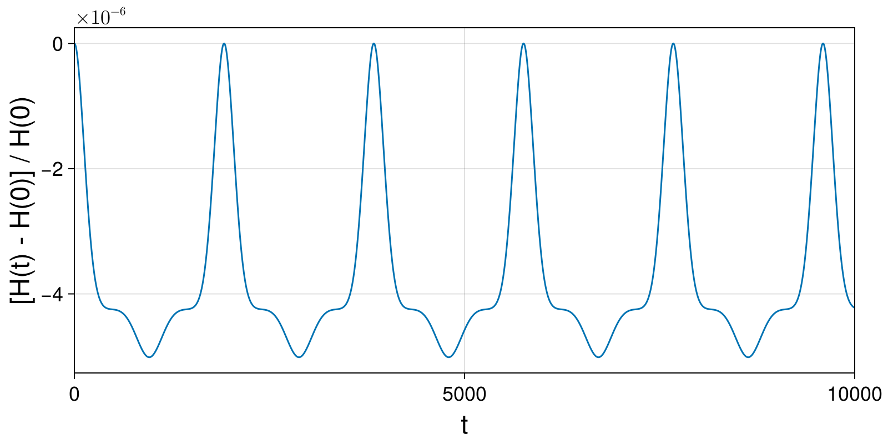
Integrate charged particle dynamics with large time step and convert result to cartesian coordinates:
gode_Δt5 = GuidingCenter4d.TokamakIterCylindrical.iodeproblem(q₀; parameters = parameters, timestep=Δt5, timespan=timespan_long)
gsol_Δt5 = integrate(gode_Δt5, SymmetricProjection(VPRKGauss(1)); options...);
gcar_Δt5 = cartesian_solution(gsol_Δt5, GuidingCenter4d.TokamakIterCylindrical);(t = GeometricSolutions.ScalarDataSeries{Float64} with data type Float64
[0.0, 50.0, 100.0, 150.0, 200.0, 250.0, 300.0, 350.0, 400.0, 450.0 … 999550.0, 999600.0, 999650.0, 999700.0, 999750.0, 999800.0, 999850.0, 999900.0, 999950.0, 1.0e6], R = GeometricSolutions.ScalarDataSeries{Float64} with data type Float64
[7.0, 6.934490790122674, 6.760561825985599, 6.532769106094016, 6.308503082183183, 6.124984759284234, 5.994694941237644, 5.913779212005114, 5.872385930862019, 5.861239502729239 … 5.885906856798105, 5.928973897011203, 5.99338468281806, 6.079246094286086, 6.183720688778095, 6.298060680539146, 6.406175941950385, 6.487005222757397, 6.521347810931207, 6.500196341475371], X = GeometricSolutions.ScalarDataSeries{Float64} with data type Float64
[7.0, 5.921525258705426, 3.1950633569780225, -0.029200955475697603, -2.725597477157067, -4.466593640031581, -5.354651637130244, -5.705041394936473, -5.8038372038633685, -5.817772938720468 … 2.731906767810241, 3.5150741040402975, 4.532544144554083, 5.545280701000215, 6.169366447291347, 5.934650963617806, 4.484023370615747, 1.8541326238239926, -1.3750342650275633, -4.269436582057169], Y = GeometricSolutions.ScalarDataSeries{Float64} with data type Float64
[0.0, -3.6086979824875645, -5.957916275668035, -6.53270384280014, -5.689317140960745, -4.191059478973495, -2.695194479713588, -1.5573333780552965, -0.8946453107447793, -0.712493187227436 … -5.213500257878151, -4.774618886837515, -3.921314006032497, -2.491404226938534, -0.42109285894916454, 2.1084321842979596, 4.575218531501606, 6.216383914572305, 6.374735919325392, 4.901475670603885], Z = GeometricSolutions.ScalarDataSeries{Float64} with data type Float64
[0.0, -0.2996528252387941, -0.5344056554205807, -0.6690204042098535, -0.7073468661841429, -0.6790167850110119, -0.6187513570359325, -0.5531367315667821, -0.4975371469108744, -0.4584484354542064 … -0.4323013256337587, -0.42991477252758903, -0.4336125848673022, -0.4336643099911943, -0.417597331990738, -0.3722909078282827, -0.28847822079475705, -0.1663428887405884, -0.018655083100719227, 0.13205767041413227])Guiding Centre 3D (Modified Poisson Structure)
Integrate charged particle dynamics and convert result to cartesian coordinates:
g3ode = GuidingCenter3d.TokamakIterCylindrical.hodeproblem(q3₀; parameters = parameters, timestep=Δt3, timespan=(0., 19_189.))
g3sol = integrate(g3ode, PartitionedGauss(1); initialguess=NoInitialGuess(), options...)
g3car = cartesian_solution(g3sol, GuidingCenter3d.TokamakIterCylindrical);(t = GeometricSolutions.ScalarDataSeries{Float64} with data type Float64
[0.0, 1.0, 2.0, 3.0, 4.0, 5.0, 6.0, 7.0, 8.0, 9.0 … 19180.0, 19181.0, 19182.0, 19183.0, 19184.0, 19185.0, 19186.0, 19187.0, 19188.0, 19189.0], R = GeometricSolutions.ScalarDataSeries{Float64} with data type Float64
[7.0, 6.999967048464548, 6.999867996632135, 6.99970293046583, 6.999471880432846, 6.999174889172546, 6.998812011481653, 6.998383314295269, 6.997888876663705, 6.997328789725116 … 6.948079834793521, 6.950583819689527, 6.953030557732097, 6.955419614007697, 6.957750562860604, 6.960022988022814, 6.962236482739138, 6.964390649886995, 6.966485102090305, 6.968519461826765], X = GeometricSolutions.ScalarDataSeries{Float64} with data type Float64
[7.0, 6.999468036454441, 6.997872075244845, 6.99521258227542, 6.991490221068668, 6.9867059201634465, 6.980860872722475, 6.973956536028124, 6.965994630866776, 6.956977140802106 … -6.483900642664581, -6.515321264783662, -6.545812832676406, -6.57536743937962, -6.603977386223188, -6.6316351860975, -6.658333566639768, -6.684065473336921, -6.708824072542726, -6.732602754406672], Y = GeometricSolutions.ScalarDataSeries{Float64} with data type Float64
[0.0, -0.08358161425869015, -0.1671478052000085, -0.25068315369720573, -0.33417225149810087, -0.4175997059105449, -0.5009501449767955, -0.5842082226373106, -0.6673586238813813, -0.7503860698819746 … -2.4969673299260844, -2.420992410394482, -2.344561429420267, -2.26768715745124, -2.190382518474754, -2.1126605861613448, -2.034534579932717, -1.9560178609559462, -1.877123928065854, -1.7978664136175606], Z = GeometricSolutions.ScalarDataSeries{Float64} with data type Float64
[1.4901161193847656e-8, -0.006911041195310788, -0.01382129611795585, -0.020729948746360624, -0.027636198464222123, -0.034539245293000995, -0.04143829010407718, -0.04833253483053548, -0.05522118267848887, -0.06210343833784756 … 0.26965892303723776, 0.26334796630355173, 0.2570075710747107, 0.25063839007883404, 0.2442410833808147, 0.23781631823035865, 0.2313647689070479, 0.2248871165624899, 0.21838404905962025, 0.21185626080922848])Plot solution and energy error:
fig, ax = plot_trajectory_poloidal(ccar.R, ccar.Z, ChargedParticle3d.TokamakIterCylindrical; label="Charged Particle Δt=0.01", linewidth = 1)
plot_trajectory_scatter!(fig, ax, g3car.R, g3car.Z; label="Guiding Center 3D Δt=1.0", color=:orange)
axislegend(ax)
fig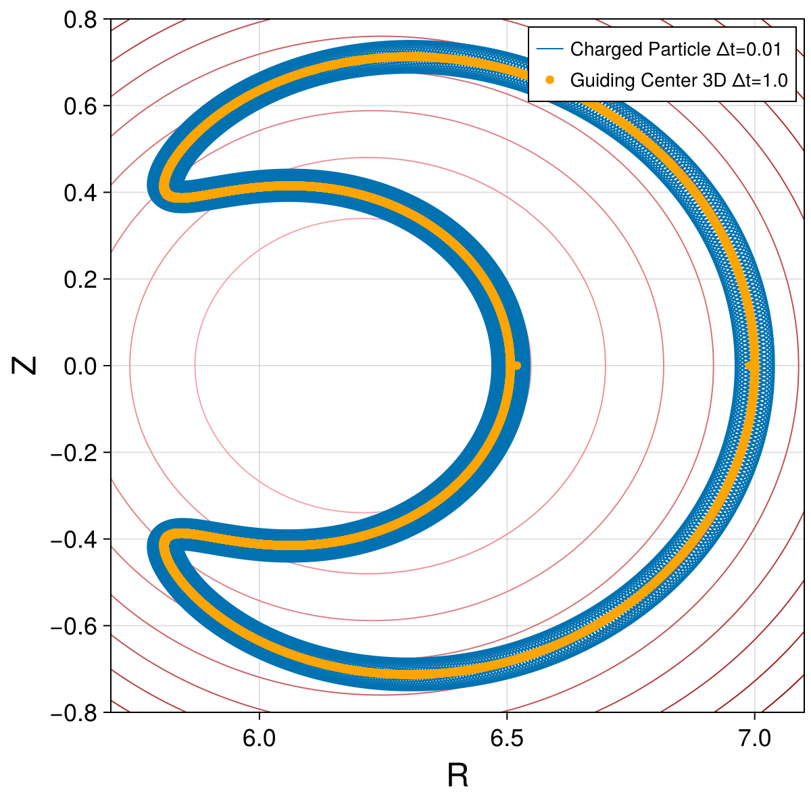
fig, ax = plot_trajectory_3d(g3car.X, g3car.Y, g3car.Z)
fig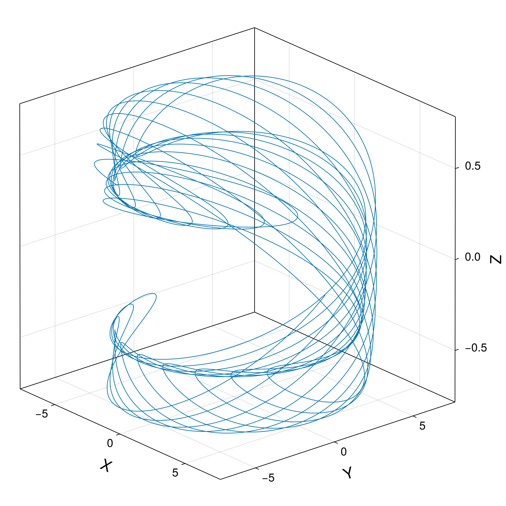
g3ham = compute_invariant(g3sol.t, g3sol.q, g3sol.p, g3ode.parameters, GuidingCenter3d.TokamakIterCylindrical.hamiltonian)
plot_invariant_error(g3sol.t, g3ham; label="H", padding_right=40)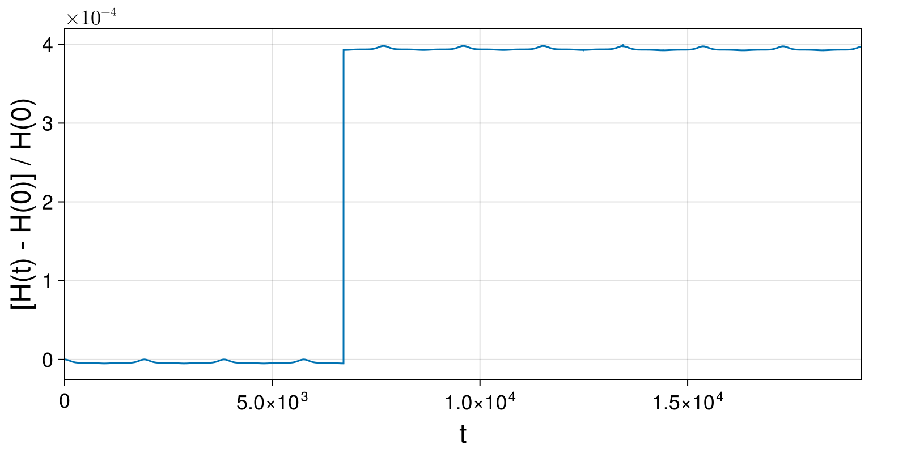
fig = plot_invariant_error(g3sol.t, g3ham; label="H", padding_right=40)
ylims!(-0.1, 0.2)
fig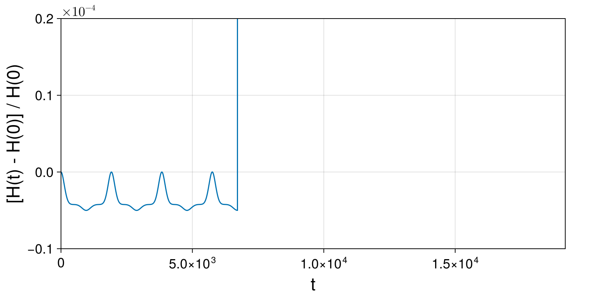
Compute and plot constraints:
g3g1 = compute_invariant(g3sol.t, g3sol.q, g3sol.p, g3ode.parameters, GuidingCenter3d.TokamakIterCylindrical.g₁)
println()
println("g₁(0) = ", g3g1[begin])
println("g₁(T) = ", g3g1[end])
println()
plot_invariant(g3sol.t, g3g1; label="g₁", padding_right=40)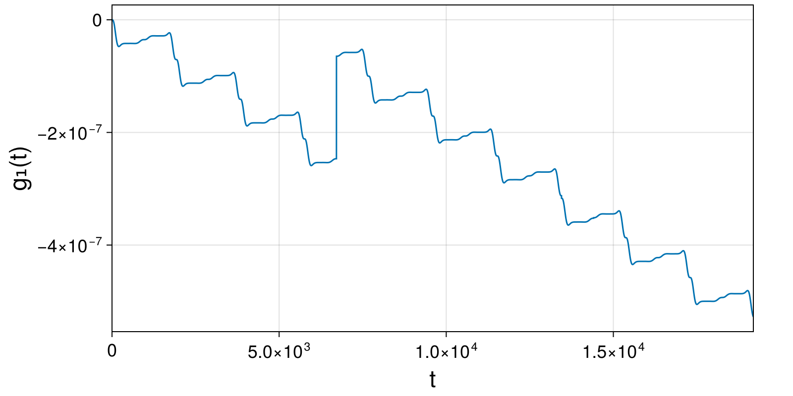
g3g2 = compute_invariant(g3sol.t, g3sol.q, g3sol.p, g3ode.parameters, GuidingCenter3d.TokamakIterCylindrical.g₂)
println()
println("g₂(0) = ", g3g2[begin])
println("g₂(T) = ", g3g2[end])
println()
plot_invariant(g3sol.t, g3g2; label="g₂", padding_right=40)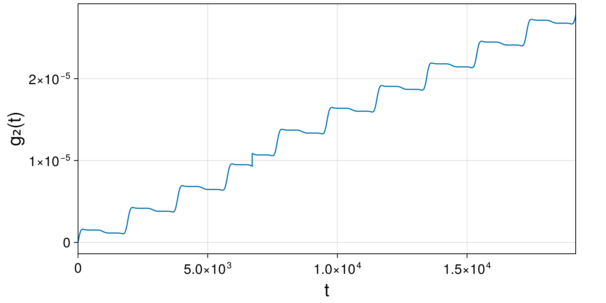
Integrate charged particle dynamics with large time step and convert result to cartesian coordinates:
g3ode_Δt4 = GuidingCenter3d.TokamakIterCylindrical.hodeproblem(q3₀; parameters = parameters, timestep=Δt4, timespan=(0, 100*Δt4))
g3sol_Δt4 = integrate(g3ode_Δt4, PartitionedGauss(1); initialguess=MidpointExtrapolation(5, 1.0), options...)
g3car_Δt4 = cartesian_solution(g3sol_Δt4, GuidingCenter3d.TokamakIterCylindrical);(t = GeometricSolutions.ScalarDataSeries{Float64} with data type Float64
[0.0, 10.0, 20.0, 30.0, 40.0, 50.0, 60.0, 70.0, 80.0, 90.0 … 910.0, 920.0, 930.0, 940.0, 950.0, 960.0, 970.0, 980.0, 990.0, 1000.0], R = GeometricSolutions.ScalarDataSeries{Float64} with data type Float64
[7.0, 6.996740419280763, 6.987001044862503, 6.9709648592384905, 6.948919068401861, 6.921252203013711, 6.888441382069902, 6.851037050971851, 6.8096459290387665, 6.7649129624996895 … 6.48189217267942, 6.491479639647221, 6.498934575460637, 6.504190565306179, 6.507319107254979, 6.507650469055225, 6.505762969815047, 6.5017830187529615, 6.495518974512818, 6.4870577769215485], X = GeometricSolutions.ScalarDataSeries{Float64} with data type Float64
[7.0, 6.9473233609693095, 6.7905702194608315, 6.533584327022156, 6.1825844381342225, 5.745917155342254, 5.233722176502437, 4.657535502826528, 4.0298525182852085, 3.363674361800067 … 6.0890257934518415, 6.293334980561111, 6.430699926772225, 6.498443302700175, 6.4951563423945995, 6.420025704663191, 6.274562873848099, 6.060615924880289, 5.781316546967405, 5.440982930568029], Y = GeometricSolutions.ScalarDataSeries{Float64} with data type Float64
[0.0, -0.8301051818457932, -1.6450956493412132, -2.4303553053881535, -3.1722430368021195, -3.858518900001103, -4.478702585950501, -5.024347889398136, -5.489222746413613, -5.86939027310037 … -2.222316589714641, -1.5916163904660876, -0.9392811442424622, -0.27336706350463885, 0.39767581205919916, 1.064323531102546, 1.7189568236415302, 2.3541701370189485, 2.961105491538072, 3.532367952292865], Z = GeometricSolutions.ScalarDataSeries{Float64} with data type Float64
[1.4901161193847656e-8, -0.06864965493151914, -0.13651462617807342, -0.2028305038317011, -0.26687296570497887, -0.327975581887902, -0.38554529776536345, -0.43907493400906367, -0.48815229228032225, -0.5324656434568639 … -0.14149446053645612, -0.11288321542725058, -0.08349862909374961, -0.05353544806031734, -0.023199342635120503, 0.007316965893748882, 0.03776534945988056, 0.06795031211442315, 0.09766197421911739, 0.12670000114553195])g3ode_Δt5 = GuidingCenter3d.TokamakIterCylindrical.hodeproblem(q3₀; parameters = parameters, timestep=Δt5, timespan=(0, 100*Δt4))
g3sol_Δt5 = integrate(g3ode_Δt5, PartitionedGauss(1); initialguess=MidpointExtrapolation(5, 1.0), options...)
g3car_Δt5 = cartesian_solution(g3sol_Δt5, GuidingCenter3d.TokamakIterCylindrical);(t = GeometricSolutions.ScalarDataSeries{Float64} with data type Float64
[0.0, 50.0, 100.0, 150.0, 200.0, 250.0, 300.0, 350.0, 400.0, 450.0 … 550.0, 600.0, 650.0, 700.0, 750.0, 800.0, 850.0, 900.0, 950.0, 1000.0], R = GeometricSolutions.ScalarDataSeries{Float64} with data type Float64
[7.0, 6.934619152458276, 6.76078874279698, 6.53324290363832, 6.309219679430372, 6.125804940205826, 5.995511964322118, 5.914568689549645, 5.873169199973552, 5.862053086793334 … 5.9096222151190805, 5.965292556907546, 6.042588057738222, 6.140235435679183, 6.252193788626151, 6.365338211872179, 6.46017734525223, 6.518190370287164, 6.516865981925903, 6.462644274515759], X = GeometricSolutions.ScalarDataSeries{Float64} with data type Float64
[7.0, 5.9216251321431566, 3.195200312913546, -0.028545672450625007, -2.7244789744098643, -4.465687278381803, -5.354312851498727, -5.705180875564962, -5.804245482923347, -5.818258773919855 … -5.660249671207816, -5.275538981994905, -4.424681212803409, -2.9040829872056793, -0.653688700737021, 2.0772755612023124, 4.662877579728726, 6.283195789782613, 6.3431794868062665, 4.832245917630179], Y = GeometricSolutions.ScalarDataSeries{Float64} with data type Float64
[0.0, -3.608780761422295, -5.958100316802962, -6.533180541093658, -5.6906473516912, -4.1932234971617035, -2.6976837477000957, -1.559818566529073, -0.8971347866858659, -0.7152141162532292 … -1.698590116838304, -2.7844934438688704, -4.115223760694566, -5.41006406699522, -6.217927166915368, -6.016847745651516, -4.471181500294226, -1.7344325788459969, 1.4945287633710023, 4.291290063661251], Z = GeometricSolutions.ScalarDataSeries{Float64} with data type Float64
[1.4901161193847656e-8, -0.2997660765836118, -0.5344486523893132, -0.6689673866811734, -0.7073539679622577, -0.6791866096266633, -0.6190686446114031, -0.553550158069609, -0.49800746440157784, -0.4589515181912245 … -0.43022269297539695, -0.4323532211900745, -0.43516512438243693, -0.42716117788232755, -0.3950578450484712, -0.32734076260677314, -0.21975171984926967, -0.07989717108661282, 0.07394990688232075, 0.2142277134919776])Plot solution, energy error and constraints:
fig, ax = plot_trajectory_poloidal(ccar.R, ccar.Z, ChargedParticle3d.TokamakIterCylindrical; label="Charged Particle Δt=0.01", linewidth = 1)
plot_trajectory_scatter!(fig, ax, g3car.R, g3car.Z; label="Guiding Center 3D Δt=1.0", markersize=12, color=Makie.wong_colors()[6])
plot_trajectory_scatter!(fig, ax, g3car_Δt4.R, g3car_Δt4.Z; label="Guiding Center 3D Δt=10.0", markersize=12, color=Makie.wong_colors()[3])
plot_trajectory_scatter!(fig, ax, g3car_Δt5.R, g3car_Δt5.Z; label="Guiding Center 3D Δt=50.0", markersize=12, color=Makie.wong_colors()[2])
axislegend(ax)
fig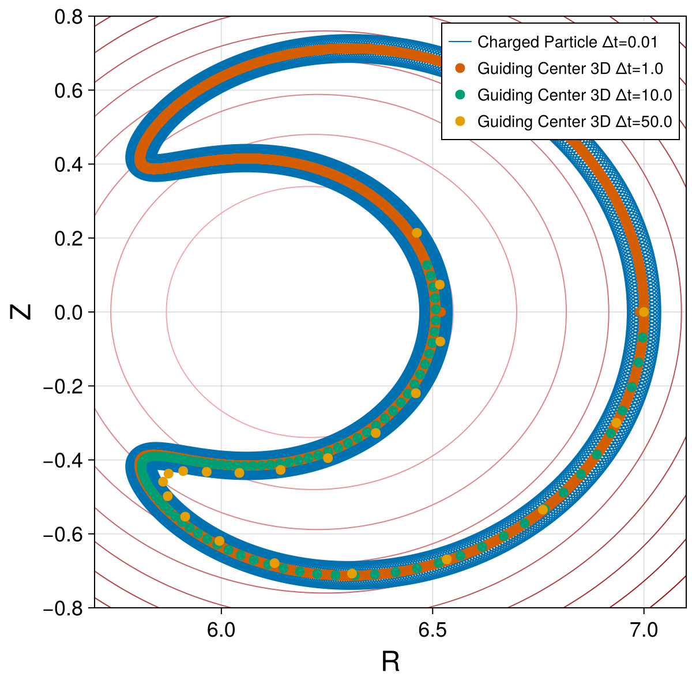
g3ham_Δt4 = compute_invariant(g3sol_Δt4.t, g3sol_Δt4.q, g3sol_Δt4.p, g3ode_Δt4.parameters, GuidingCenter3d.TokamakIterCylindrical.hamiltonian)
plot_invariant_error(g3sol_Δt4.t, g3ham_Δt4; label="H", padding_right=40)
g3g1_Δt4 = compute_invariant(g3sol_Δt4.t, g3sol_Δt4.q, g3sol_Δt4.p, g3ode_Δt4.parameters, GuidingCenter3d.TokamakIterCylindrical.g₁)
plot_invariant(g3sol_Δt4.t, g3g1_Δt4; label="g₁", padding_right=40)
g3g2_Δt4 = compute_invariant(g3sol_Δt4.t, g3sol_Δt4.q, g3sol_Δt4.p, g3ode_Δt4.parameters, GuidingCenter3d.TokamakIterCylindrical.g₂)
plot_invariant(g3sol_Δt4.t, g3g2_Δt4; label="g₂", padding_right=40)
g3ham_Δt5 = compute_invariant(g3sol_Δt5.t, g3sol_Δt5.q, g3sol_Δt5.p, g3ode_Δt5.parameters, GuidingCenter3d.TokamakIterCylindrical.hamiltonian)
plot_invariant_error(g3sol_Δt5.t, g3ham_Δt5; label="H", padding_right=40)
g3g1_Δt5 = compute_invariant(g3sol_Δt5.t, g3sol_Δt5.q, g3sol_Δt5.p, g3ode_Δt5.parameters, GuidingCenter3d.TokamakIterCylindrical.g₁)
plot_invariant(g3sol_Δt5.t, g3g1_Δt5; label="g₁", padding_right=40)
g3g2_Δt5 = compute_invariant(g3sol_Δt5.t, g3sol_Δt5.q, g3sol_Δt5.p, g3ode_Δt5.parameters, GuidingCenter3d.TokamakIterCylindrical.g₂)
plot_invariant(g3sol_Δt5.t, g3g2_Δt5; label="g₂", padding_right=40)